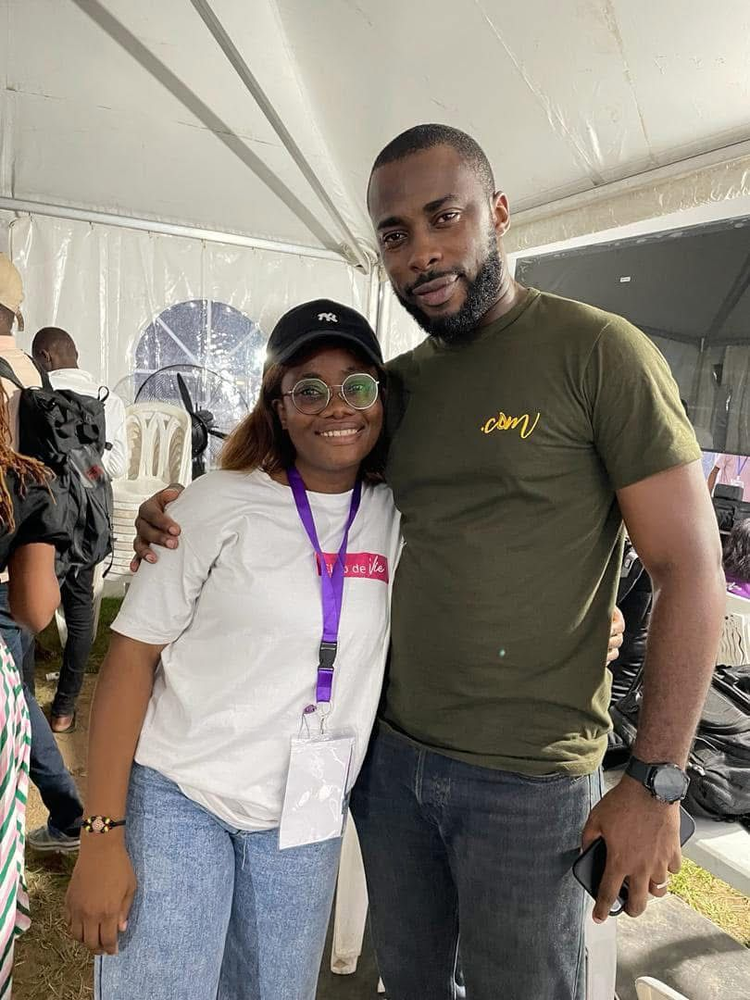

Mes Projets

Transmission & Sensibilisation — Héritage capillaire
Je forme et j’éduque autour de la valorisation du cheveu naturel, de l’acceptation identitaire et de la transmission du patrimoine capillaire africain.

Entreprenante — REINA KREMA
CEO de REINA KREMA : soins capillaires, lockticienne, conception de produits capillaires et accompagnement personnalisé.

Engagée — Foi & Évangélisation
Engagée dans des actions sociales et spirituelles pour impacter les vies et transmettre des valeurs positives.